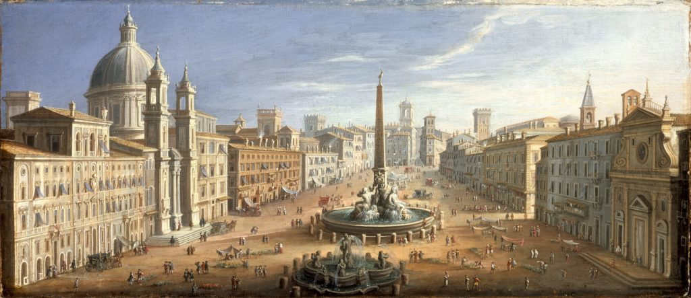
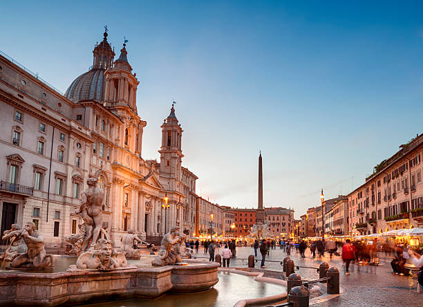
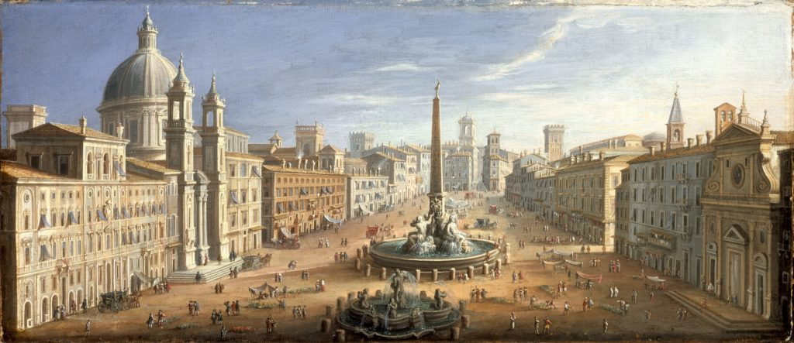
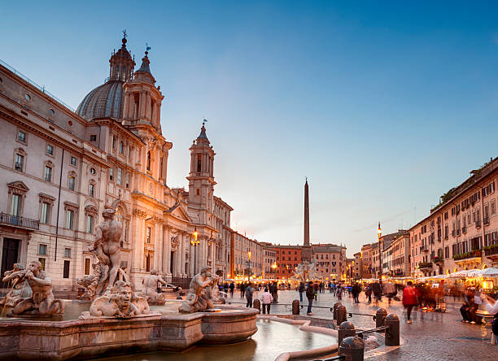

Piazza Navona
Piazza Navona este una dintre cele mai frumoase și animate piețe din Roma, un exemplu remarcabil de arhitectură barocă. Situată în centrul orașului, pe locul fostei stadioane Domitiana, construit în anul 86 d.Hr. pentru competiții atletice, piața își datorează forma sa eliptică curbelor stadioanelor antice. În secolul al XVII-lea, Piazza Navona a fost transformată într-un loc emblematic al vieții publice romane, adăugându-se monumente, fântâni și clădiri de o frumusețe rară. Astăzi, piața este un loc viu, plin de artiști de stradă, cafenele și restaurante, fiind un punct de atracție pentru turiști din întreaga lume.
Unul dintre cele mai remarcabile elemente ale pieței este Fontana dei Quattro Fiumi, creată de Gian Lorenzo Bernini, care reprezintă cele patru mari râuri ale lumii cunoscute de romani: Nilul, Gangele, Danubul și Río de la Plata. Fântâna este o capodoperă a sculpturii baroce, cu o serie de statui impozante și un obelisc egiptean, care domină centrul pieței. De asemenea, Piazza Navona este înfrumusețată cu alte două fântâni, Fontana del Moro și Fontana di Nettuno, fiecare având propriile sale elemente iconografice, inspirate din mitologia antică.
Piazza Navona nu este doar un loc de frumusețe arhitecturală, ci și un centru cultural important. În jurul pieței se află unele dintre cele mai importante clădiri din Roma, cum ar fi Biserica Sant'Agnese in Agone, proiectată de Borromini și Contarelli, care adăpostește faimoasa lucrare „Chemarea lui Matei” a lui Caravaggio. Atmosfera vibrantă, cu numeroase cafenele și tarabe de suveniruri, atrage atât localnici, cât și vizitatori. Piazza Navona rămâne un loc simbolic, unde istoria, arta și viața cotidiană se întâlnesc într-o armonie perfectă.